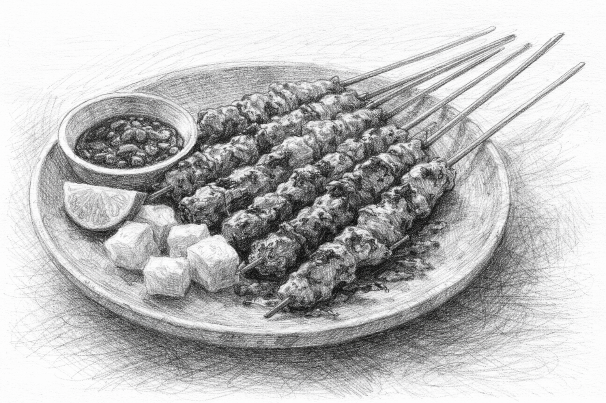

Ada makanan yang bukan sekadar pengisi perut, ia adalah piring kenangan yang dihidangkan di meja rasa. Masih terekam jelas dalam ingatanku, ritual kecil kita setiap kali rasa lapar mulai menyapa.
“Mau makan apa?” tanyamu waktu itu.
“Mmmmm, ayam,” jawabku tanpa ragu.
Kamu menghela napas, setengah tak percaya. “Lagi?! Ayam terus-menerus. Yang lain, dong!”
Aku terdiam sejenak, berpura-pura berpikir keras sebelum akhirnya menyahut pelan, “Mmmm, oke, mau sate.”
Wajahmu sedikit mencerah, ada harapan di sana. “Sate apa? Daging ya?”
Dan dengan polosnya aku menjawab, “Iya, daging ayam.”
Aku tertawa dalam hati melihat wajahmu yang seketika berubah jengkel mendengar ucapanku. Kerutan di dahimu dan helaan napas panjangmu adalah bumbu paling sedap yang tak bisa ditemukan di dapur mana pun. Bagiku, kejengkelanmu itu adalah bentuk kasih yang paling jujur. Akhirnya, kita berakhir di sudut jalan itu, di depan sepiring sate dengan bumbu kacang yang kental.
Itu bukan hanya tentang daging yang diasap atau aroma arang yang meresap, itu tentang bagaimana kamu selalu membiarkanku mengambil bagian yang paling renyah meski kamu baru saja mengomel. Tentang caramu memandangku dengan mata berbinar, seolah kegigihanku memakan ayam setiap hari adalah sebuah keajaiban kecil yang layak kau rayakan.